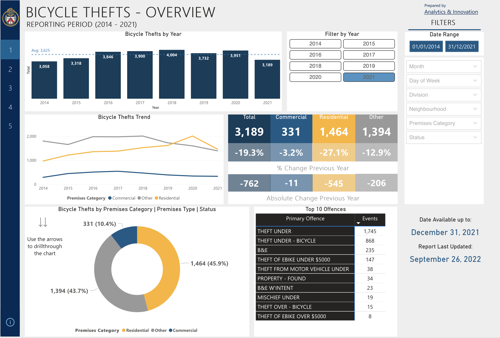
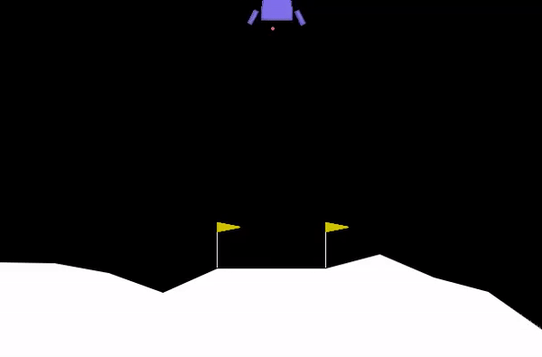
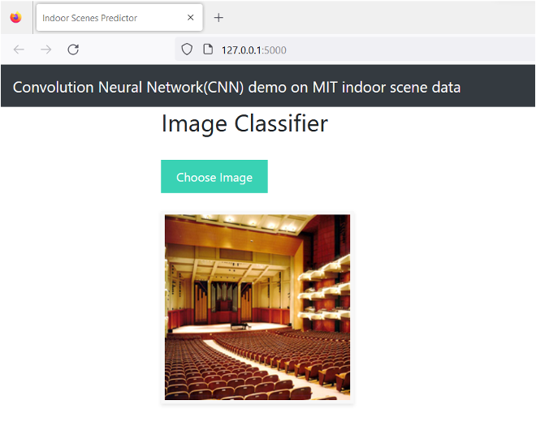

Manav Patel.
Software Developer
About Me
Hello, my name is Manav Patel, a Machine Learning Engineer with 2+ years of experience in developing ML models. I am currently pursuing an advanced diploma in Software Engineering Technology - Artificial Intelligence. I am proficient in neural networks, unsupervised, and supervised learning, and have experience with web development and distributed storage systems. I am passionate about using my skills to make a positive impact in the field of AI. I possess strong interpersonal, problem-solving, and leadership skills, and I am confident that my skills and experience make me a valuable asset to any organization.
My Projects
1) Bycycle Theft (Toronto Police)
Using supervised learning algorithms, these models are trained on historical data, such as time of day, location, and weather conditions, to identify patterns and correlations between various factors and the likelihood of a theft occurring. This data is then used to make predictions about where and when thefts are most likely to occur in the future. By analyzing data from previous years, researchers have found that bicycle thefts tend to occur more frequently in certain areas, such as downtown Toronto, and at certain times of day, such as during rush hour. They have also found that factors such as weather conditions and the type of bike can play a role in the likelihood of a theft occurring. Using these insights, machine learning models can be trained to predict the likelihood of a bicycle theft occurring in a particular location and at a particular time. This information can be used by law enforcement and other stakeholders to deploy resources more effectively and reduce the overall number of thefts in the city. Overall, the use of machine learning and predictive modeling techniques has shown promise in addressing the issue of bicycle theft in Toronto, and could potentially be applied in other cities and contexts as well.
References: bicycle-thefts. (n.d.). https://data.torontopolice.on.ca/pages/bicycle-thefts
2) Lunar Lander Mission using TF-Agents.
The mission's objective is to successfully land the rover between the two flags. For reinforcement learning models, the lunar lander mission poses a number of difficulties, including the large dimensionality of the input space, the sparse reward structure, and the requirement to strike a balance between exploration and exploitation. To solve these issues, I have employed several methodologies such as deep neural networks, value-based systems, and actor-critic models. I've shown that tf agents can successfully learn to navigate the spacecraft and land securely on the moon by training these models in a simulated lunar lander environment. Additionally, these models can be used to investigate various circumstances and environments, such as altering the gravitational force or the existence of impediments.
3) MIT-Indoor Scene Detection.
During my tenure as a student studying data science, I was involved in an image classification project that utilized a convolutional neural network (CNN) to accurately categorize indoor scenes in the MIT-IndoorScene dataset. Our main objective was to create a model that could correctly identify the indoor environment depicted in an image, such as an office, living room, or bedroom. To achieve this, we utilized transfer learning techniques to take advantage of the pre-trained weights of a commonly used CNN architecture, which we then fine-tuned on our own dataset using the Adam optimizer. In addition, we employed data augmentation strategies such as random rotations and flips to introduce more variety in our training data, which helped to enhance the generalization capabilities of our model. After a thorough evaluation process, our model achieved an accuracy of over 90%, demonstrating the efficacy of CNNs for indoor scene classification. Our work has important applications in fields like robotics, where precise scene recognition is essential for autonomous navigation and interaction with indoor environments.
My Achievements
1)
2)
3)
Contact Me
Toronto, CA
Phone: +1 416-986-0655
Email: mpate765@my.centennialcollege.ca
Let's get in touch. Send me a message: